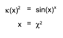

class THtml: public TObject
The THtml class is designed to easily document
classes, code, and code related text files (like change logs). It generates HTML
pages conforming to the XHTML 1.0 transitional specifications; an example of
these pages is ROOT's own
reference guide. This page was verified to be valid XHTML 1.0 transitional,
which proves that all pages generated by THtml can be valid, as long as the user
provided XHTML (documentation, header, etc) is valid. You can check the current
THtml by clicking this icon:
- Usage
- Configuration
- Documentation syntax
- Documentation directives
- Product and module index
- Auxiliary files: style sheet, JavaScript, help page
- Class Charts
- Configuration variables
- Behind the scenes
I. Usage
These are typical things people do with THtml:
root[] THtml html; // create a THtml object
root[] html.MakeAll(); // generate documentation for all changed classes
or to run on just a few classes:
root[] THtml html; // create a THtml object
root[] html.MakeIndex(); // create auxilliary files (style sheet etc) and indices
root[] html.MakeClass("TMyClass"); // create documentation for TMyClass only
To "beautify" (i.e. create links to documentation for class names etc) some text
file or macro, use:
root[] html.Convert( "hsimple.C", "Histogram example" )
II. Configuration
Most configuration options can be set as a call to THtml, or as a TEnv variable, which you can set in your .rootrc.II.1 Input files
In your .rootrc, define Root.Html.SourceDir to point to directories containing .cxx and .h files (see: TEnv) of the classes you want to document, or call THtml::SetInputDir()
Example:
Root.Html.SourceDir: .:src:include Root.Html.Root: http://root.cern.ch/root/html
II.2 Output directory
The output directory can be specified using the Root.Html.OutputDir configuration variable (default value: "htmldoc"). If that directory doesn't exist THtml will create it.
Example:
Root.Html.OutputDir: htmldoc
II.3 Linking other documentation
When trying to document a class, THtml searches for a source file in the directories set via SetInputDir(). If it cannot find it, it assumes that this class must have been documented before. Based on the library this class is defined in, it checks the configuration variable Root.Html.LibName, and creates a link using its value. Alternatively, you can set these URLs via THtml::SetLibURL().
Example:
If a class MyClass is defined in class mylibs/libMyLib.so, and .rootrc
contains
Root.Html.MyLib: ../mylib/
THtml will create a link to "../mylib/MyClass.html".
The library name association can be set up using the rootmap facility. For the library in the example above, which contains a dictionary generated from the linkdef MyLinkdef.h, the command to generate the rootmap file is
$ rlibmap -f -r rootmap -l mylib/libMyLib.so -d libCore.so -c MyLinkdef.h
Here, -r specifies that the entries for libMyLib should be updated, -l specifies the library we're dealing with, -d its dependencies, and -c its linkdef. The rootmap file must be within one of the LD_LIBRARY_PATH (or PATH for Windows) directories when ROOT is started, otherwise ROOT will not use it.
II.4 Recognizing class documentation
The class documentation has to appear in the header file containing the class, right in front of its declaration. It is introduced by a string defined by Root.Html.Description or SetClassDocTag(). See the section on documentation syntax for further details.
Example:
Root.Html.Description: //____________________
The class documentation will show which include statement is to be used and which library needs to be linked to access it. The include file name is determined via TClass::GetDeclFileName(); leading parts are removed if they match any of the ':' separated entries in THtml::GetIncludePath().
II.5 Author, copyright, etc.
During the conversion, THtml will look for some strings ("tags") in the source file, which have to appear right in front of e.g. the author's name, copyright notice, etc. These tags can be defined with the following environment variables: Root.Html.Author, Root.Html.LastUpdate and Root.Html.Copyright, or with SetAuthorTag(), SetLastUpdateTag(), SetCopyrightTag().
If the LastUpdate tag is not found, the current date and time are used. This is useful when using THtml::MakeAll()'s default option force=kFALSE, in which case THtml generates documentation only for changed classes.
Authors can be a comma separated list of author entries. Each entry has one of the following two formats- Name (non-alpha).
THtml will generate an HTML link for Name, taking the Root.Html.XWho configuration variable (defaults to "http://consult.cern.ch/xwho/people?") and adding all parts of the name with spaces replaces by '+'. Non-alphanumerical characters are printed out behind Name.
Example:
// Author: Enrico Fermi appears in the source file. THtml will generate the link http://consult.cern.ch/xwho/people?Enrico+Fermi. This works well for people at CERN. - Name <link> Info.
THtml will generate an HTML link for Name as specified by link and print Info behind Name.
Example:
// Author: Enrico Fermi <http://www.enricos-home.it> or
// Author: Enrico Fermi <mailto:enrico@fnal.gov> in the source file. That's world compatible.
Example (with defaults given):
Root.Html.Author: // Author:
Root.Html.LastUpdate: // @(#)
Root.Html.Copyright: * Copyright
Root.Html.XWho: http://consult.cern.ch/xwho/people?
II.6 Header and footer
THtml generates a default header and footer for all pages. You can specify your own versions with the configuration variables Root.Html.Header and Root.Html.Footer, or by calling SetHeader(), SetFooter(). Both variables default to "", using the standard Root versions. If it has a "+" appended, THtml will write both versions (user and root) to a file, for the header in the order 1st root, 2nd user, and for the footer 1st user, 2nd root (the root versions containing "<html>" and </html> tags, resp).
If you want to replace root's header you have to write a file containing all HTML elements necessary starting with the <doctype> tag and ending with (and including) the <body> tag. If you add your header it will be added directly after Root's <body> tag. Any occurrence of the string %TITLE% in the user's header file will be replaced by a sensible, automatically generated title. If the header is generated for a class, occurrences of %CLASS% will be replaced by the current class's name, %SRCFILE% and %INCFILE% by the name of the source and header file, resp. (as given by TClass::GetImplFileName(), TClass::GetDeclFileName()). If the header is not generated for a class, they will be replaced by "".
Root's footer starts with the tag <!--SIGNATURE-->. It includes the author(s), last update, copyright, the links to the Root home page, to the user home page, to the index file (ClassIndex.html), to the top of the page and this page is automatically generated infomation. It ends with the tags </body></html>. If you want to replace it, THtml will search for some tags in your footer: Occurrences of the strings %AUTHOR%, %UPDATE%, and %COPYRIGHT% are replaced by their corresponding values before writing the html file. The %AUTHOR% tag will be replaced by the exact string that follows Root.Html.Author, no link generation will occur.
II.7 Links to searches, home page, ViewVC
Additional parameters can be set by Root.Html.Homepage (address of the user's home page), Root.Html.SearchEngine (search engine for the class documentation), Root.Html.Search (search URL, where %u is replaced by the referer and %s by the escaped search expression), and a ViewVC base URL Root.Html.ViewCVS. For the latter, the file name is appended or, if the URL contains %f, %f is replaced by the file name. All values default to "".
Examples:
Root.Html.Homepage: http://www.enricos-home.it
Root.Html.SearchEngine: http://root.cern.ch/root/Search.phtml
Root.Html.Search: http://www.google.com/search?q=%s+site%3A%u
II.8 HTML Charset
XHTML 1.0 transitional recommends the specification of the charset in the content type meta tag, see e.g. http://www.w3.org/TR/2002/REC-xhtml1-20020801/ THtml generates it for the HTML output files. It defaults to ISO-8859-1, and can be changed using Root.Html.Charset.
Example:
Root.Html.Charset: EUC-JP
III. Documentation syntax
III.1 Class description
A class description block, which must be placed before the first member function, has a following form:
//////////////////////////////////////////////////////////////// // // // TMyClass // // // // This is the description block. // // // ////////////////////////////////////////////////////////////////
The environment variable Root.Html.Description (see: TEnv) contains the delimiter string (default value: //_________________). It means that you can also write your class description block like this:
//_____________________________________________________________ // A description of the class starts with the line above, and // will take place here ! //
Note that everything until the first non-commented line is considered as a valid class description block.
III.2 Class index
All classes to be documented will have an entry in the ClassIndex.html, showing their name with a link to their documentation page and a miniature description. This discription for e.g. the class MyClass has to be given in MyClass's header as a comment right after ClassDef(MyClass, n).
III.3 Method documentation
A member function description block starts immediately after '{' and looks like this:
void TWorld::HelloWorldFunc(string *text)
{
// This is an example of description for the
// TWorld member function
helloWorld.Print( text );
}
Like in a class description block, everything until the first
non-commented line is considered as a valid member function
description block.
If the rootrc variable Root.Html.DescriptionStyle is set to
Doc++ THtml will also look for method documentation in front of
the function implementation. This feature is not recommended; source code
making use of this does not comply to the ROOT documentation standards, which
means future versions of THtml might not support it anymore.
III.4 Data member documentation
Data members are documented by putting a C++ comment behind their declaration in the header file, e.g.
int fIAmADataMember; // this is a data member
IV. Documentation directives
NOTE that THtml does not yet support nested directives (i.e. latex inside html etc)!IV.1 BEGIN_HTML END_HTML: include 'raw' HTML
You can insert pure html code into your documentation comments. During the generation of the documentation, this code will be inserted as is into the html file.
Pure html code must be surrounded by the keywords BEGIN_HTML and END_HTML, where the case is ignored. An example of pure html code is this class description you are reading right now. THtml uses a TDocHtmlDirective object to process this directive.
IV.2 BEGIN_MACRO END_MACRO: include a picture generated by a macro
THtml can create images from scripts. You can either call an external script by surrounding it by "begin_macro"/"end_macro", or include an unnamed macro within these keywords. The macro should return a pointer to an object; this object will then be saved as a GIF file.
Objects deriving from TGObject (GUI elements) will need to run in graphics mode (non-batch). You must specify this as a parameter: "Begin_macro(GUI)...". To create a second tab that displays the source of the macro you can specify the argument "Begin_macro(source)...". Of course you can combine them, e.g. as "Begin_macro(source,gui)...". THtml uses a TDocMacroDirective object to process this directive.
This is an example:
{kind=link}
{
TCanvas* macro_example_canvas = new TCanvas("macro_example_canvas", "", 150, 150);
macro_example_canvas->SetBorderSize(0);
macro_example_canvas->SetFillStyle(1001);
macro_example_canvas->SetFillColor(kWhite);
macro_example_canvas->cd();
TArc* macro_example_arc = new TArc(0.5,0.32,0.11,180,360);
macro_example_arc->Draw();
TEllipse* macro_example_ellipsis = new TEllipse(0.42,0.58,0.014,0.014,0,360,0);
macro_example_ellipsis->SetFillStyle(0);
macro_example_ellipsis->Draw();
macro_example_ellipsis = new TEllipse(0.58,0.58,0.014,0.014,0,360,0);
macro_example_ellipsis->SetFillStyle(0);
macro_example_ellipsis->Draw();
macro_example_ellipsis = new TEllipse(0.50,0.48,0.22,0.32,0,360,0);
macro_example_ellipsis->SetFillStyle(0);
macro_example_ellipsis->Draw();
TLine* macro_example_line = new TLine(0.48,0.53,0.52,0.41);
macro_example_line->Draw();
return macro_example_canvas;
}IV.3 BEGIN_LATEX END_LATEX: include a latex picture
You can specify TLatex style text and let THtml convert it into an image by surrounding it by "Begin_Latex", "End_Latex". You can have multiple lines, and e.g. align each line at the '=' sign by passing the argument separator='='. You can also specify how to align these parts; if you want the part left of the separator to be right aligned, and the right part to be left aligned, you could specify align='rl'. THtml uses a TDocLatexDirective object to process the directive. This is an example output with arguments separator='=', align='rl':

V. Product and module index
THtml::MakeIndex() will generate index files for classes and types, all modules, and the product which you can set by THtml::SetProductName(). THtml will make use of external documentation in the module and product index, either by linking it or by including it. The files for modules are searched based on the source file directory of the module's classes.
A filename starting with "index." will be included in the index page; all other files will be linked. Only files ending on .html or .txt will be taken into account; the text files will first be run through THtml::Convert(). You can see an example here; the part between "Index of HIST classes" and "Jump to" is created by parsing the module's doc directory.
VI. Auxiliary files: style sheet, JavaScript, help page
The documentation pages share a common set of javascript and CSS files. They are generated automatically when running MakeAll(); they can be generated on demand by calling CreateAuxiliaryFiles().
VII. Class Charts
THtml can generate a number of graphical representations for a class, which are displayed as a tabbed set of imaged ontop of the class description. It can show the inheritance, inherited and hidden members, directly and indirectly included files, and library dependencies. These graphs are generated using the Graphviz package. You can install it from http://www.graphviz.org. You can either put it into your $PATH, or tell THtml where to find it by calling SetDotDir().VIII. Configuration variables
Here is a list of all configuration variables that are known to THtml. You can set them in your .rootrc file, see TEnv.
Root.Html.OutputDir (default: htmldoc) Root.Html.SourceDir (default: .:src/:include/) Root.Html.Author (default: // Author:) - start tag for authors Root.Html.LastUpdate (default: // @(#)) - start tag for last update Root.Html.Copyright (default: * Copyright) - start tag for copyright notice Root.Html.Description (default: //____________________ ) - start tag for class descr Root.Html.HomePage (default: ) - URL to the user defined home page Root.Html.Header (default: ) - location of user defined header Root.Html.Footer (default: ) - location of user defined footer Root.Html.Root (default: ) - URL of Root's class documentation Root.Html.SearchEngine (default: ) - link to the search engine Root.Html.Search (defualt: ) - link to search by replacing "%s" with user input Root.Html.ViewCVS (default: ) - URL of ViewCVS base Root.Html.XWho (default: http://consult.cern.ch/xwho/people?) - URL of CERN's xWho Root.Html.Charset (default: ISO-8859-1) - HTML character set
IX. Behind the scene
Internally, THtml is just an API class that sets up the list of known classes, and forwards API invocations to the "work horses". TDocOutput generates the output by letting a TDocParser object parse the sources, which in turn invokes objects deriving from TDocDirective to process directives.
Function Members (Methods)
| THtml() | |
| virtual | ~THtml() |
| void | TObject::AbstractMethod(const char* method) const |
| void | AddMacroPath(const char* path) |
| virtual void | TObject::AppendPad(Option_t* option = "") |
| virtual void | TObject::Browse(TBrowser* b) |
| static TClass* | Class() |
| virtual const char* | TObject::ClassName() const |
| virtual void | TObject::Clear(Option_t* = "") |
| virtual TObject* | TObject::Clone(const char* newname = "") const |
| virtual Int_t | TObject::Compare(const TObject* obj) const |
| void | Convert(const char* filename, const char* title, const char* dirname = "", const char* relpath = "../", Int_t includeOutput = kNoOutput, const char* context = "") |
| virtual void | TObject::Copy(TObject& object) const |
| Bool_t | CopyFileFromEtcDir(const char* filename) const |
| virtual void | CreateAuxiliaryFiles() const |
| void | CreateHierarchy() |
| virtual void | TObject::Delete(Option_t* option = "")MENU |
| virtual Int_t | TObject::DistancetoPrimitive(Int_t px, Int_t py) |
| virtual void | TObject::Draw(Option_t* option = "") |
| virtual void | TObject::DrawClass() constMENU |
| virtual TObject* | TObject::DrawClone(Option_t* option = "") constMENU |
| virtual void | TObject::Dump() constMENU |
| virtual void | TObject::Error(const char* method, const char* msgfmt) const |
| virtual void | TObject::Execute(const char* method, const char* params, Int_t* error = 0) |
| virtual void | TObject::Execute(TMethod* method, TObjArray* params, Int_t* error = 0) |
| virtual void | TObject::ExecuteEvent(Int_t event, Int_t px, Int_t py) |
| virtual void | TObject::Fatal(const char* method, const char* msgfmt) const |
| virtual TObject* | TObject::FindObject(const char* name) const |
| virtual TObject* | TObject::FindObject(const TObject* obj) const |
| const TString& | GetAuthorTag() const |
| const TString& | GetCharset() const |
| virtual TClass* | GetClass(const char* name) const |
| const TString& | GetClassDocTag() const |
| const TString& | GetCopyrightTag() const |
| const char* | GetCounter() const |
| const char* | GetCounterFormat() const |
| virtual bool | GetDeclFileName(TClass* cl, Bool_t filesys, TString& out_name) const |
| void | GetDerivedClasses(TClass* cl, map<TClass*,Int_t>& derived) const |
| static const char* | GetDirDelimiter() |
| const TString& | GetDocStyle() const |
| const TString& | GetDotDir() const |
| virtual Option_t* | TObject::GetDrawOption() const |
| static Long_t | TObject::GetDtorOnly() |
| virtual const char* | GetEtcDir() const |
| const THtml::TFileDefinition& | GetFileDefinition() const |
| const TString& | GetFooter() const |
| const TString& | GetHeader() const |
| const TString& | GetHomepage() const |
| virtual const char* | GetHtmlFileName(const char* classname) const |
| virtual void | GetHtmlFileName(TClass* classPtr, TString& filename) const |
| virtual const char* | TObject::GetIconName() const |
| virtual bool | GetImplFileName(TClass* cl, Bool_t filesys, TString& out_name) const |
| const TString& | GetInputPath() const |
| const TString& | GetLastUpdateTag() const |
| TList* | GetLibraryDependencies() |
| const TList* | GetListOfClasses() const |
| const TList* | GetListOfModules() const |
| THtml::TFileSysDB* | GetLocalFiles() const |
| const TString& | GetMacroPath() const |
| TVirtualMutex* | GetMakeClassMutex() const |
| const THtml::TModuleDefinition& | GetModuleDefinition() const |
| const TString& | GetModuleDocPath() const |
| void | GetModuleMacroPath(const TString& module, TString& out_path) const |
| virtual void | GetModuleNameForClass(TString& module, TClass* cl) const |
| virtual const char* | TObject::GetName() const |
| virtual char* | TObject::GetObjectInfo(Int_t px, Int_t py) const |
| static Bool_t | TObject::GetObjectStat() |
| virtual Option_t* | TObject::GetOption() const |
| const TString& | GetOutputDir(Bool_t createDir = kTRUE) const |
| const THtml::TPathDefinition& | GetPathDefinition() const |
| const THtml::PathInfo_t& | GetPathInfo() const |
| const TString& | GetProductName() const |
| const TString& | GetSearchEngine() const |
| const TString& | GetSearchStemURL() const |
| virtual const char* | TObject::GetTitle() const |
| virtual UInt_t | TObject::GetUniqueID() const |
| const char* | GetURL(const char* lib = 0) const |
| const TString& | GetViewCVS() const |
| const TString& | GetWikiURL() const |
| const TString& | GetXwho() const |
| virtual Bool_t | TObject::HandleTimer(TTimer* timer) |
| virtual ULong_t | TObject::Hash() const |
| Bool_t | HaveDot() |
| void | HelperDeleted(THtml::THelperBase* who) |
| virtual void | TObject::Info(const char* method, const char* msgfmt) const |
| virtual Bool_t | TObject::InheritsFrom(const char* classname) const |
| virtual Bool_t | TObject::InheritsFrom(const TClass* cl) const |
| virtual void | TObject::Inspect() constMENU |
| void | TObject::InvertBit(UInt_t f) |
| virtual TClass* | IsA() const |
| Bool_t | IsBatch() const |
| virtual Bool_t | TObject::IsEqual(const TObject* obj) const |
| virtual Bool_t | TObject::IsFolder() const |
| static Bool_t | IsNamespace(const TClass* cl) |
| Bool_t | TObject::IsOnHeap() const |
| virtual Bool_t | TObject::IsSortable() const |
| Bool_t | TObject::IsZombie() const |
| static void | LoadAllLibs() |
| virtual void | TObject::ls(Option_t* option = "") const |
| void | MakeAll(Bool_t force = kFALSE, const char* filter = "*", int numthreads = 1) |
| void | MakeClass(const char* className, Bool_t force = kFALSE) |
| void | MakeIndex(const char* filter = "*") |
| void | MakeTree(const char* className, Bool_t force = kFALSE) |
| void | TObject::MayNotUse(const char* method) const |
| virtual Bool_t | TObject::Notify() |
| void | TObject::Obsolete(const char* method, const char* asOfVers, const char* removedFromVers) const |
| static void | TObject::operator delete(void* ptr) |
| static void | TObject::operator delete(void* ptr, void* vp) |
| static void | TObject::operator delete[](void* ptr) |
| static void | TObject::operator delete[](void* ptr, void* vp) |
| void* | TObject::operator new(size_t sz) |
| void* | TObject::operator new(size_t sz, void* vp) |
| void* | TObject::operator new[](size_t sz) |
| void* | TObject::operator new[](size_t sz, void* vp) |
| TObject& | TObject::operator=(const TObject& rhs) |
| virtual void | TObject::Paint(Option_t* option = "") |
| virtual void | TObject::Pop() |
| virtual void | TObject::Print(Option_t* option = "") const |
| virtual Int_t | TObject::Read(const char* name) |
| virtual void | TObject::RecursiveRemove(TObject* obj) |
| void | ReplaceSpecialChars(ostream&, const char*) |
| void | TObject::ResetBit(UInt_t f) |
| virtual void | TObject::SaveAs(const char* filename = "", Option_t* option = "") constMENU |
| virtual void | TObject::SavePrimitive(ostream& out, Option_t* option = "") |
| void | SetAuthorTag(const char* tag) |
| void | SetBatch(Bool_t batch = kTRUE) |
| void | TObject::SetBit(UInt_t f) |
| void | TObject::SetBit(UInt_t f, Bool_t set) |
| void | SetCharset(const char* charset) |
| void | SetClassDocTag(const char* tag) |
| void | SetCopyrightTag(const char* tag) |
| void | SetCounterFormat(const char* format) |
| void | SetDeclFileName(TClass* cl, const char* filename) |
| void | SetDocPath(const char* path) |
| void | SetDocStyle(const char* style) |
| void | SetDotDir(const char* dir) |
| virtual void | TObject::SetDrawOption(Option_t* option = "")MENU |
| static void | TObject::SetDtorOnly(void* obj) |
| void | SetEscape(char = '\\') |
| void | SetEtcDir(const char* dir) |
| void | SetFileDefinition(const THtml::TFileDefinition& fd) |
| void | SetFooter(const char* file) |
| void | SetFoundDot(Bool_t found = kTRUE) |
| void | SetHeader(const char* file) |
| void | SetHomepage(const char* url) |
| void | SetImplFileName(TClass* cl, const char* filename) |
| void | SetIncludePath(const char* dir) |
| void | SetInputDir(const char* dir) |
| void | SetLastUpdateTag(const char* tag) |
| void | SetLibURL(const char* lib, const char* url) |
| void | SetMacroPath(const char* path) |
| void | SetModuleDefinition(const THtml::TModuleDefinition& md) |
| static void | TObject::SetObjectStat(Bool_t stat) |
| void | SetOutputDir(const char* dir) |
| void | SetPathDefinition(const THtml::TPathDefinition& pd) |
| void | SetProductName(const char* product) |
| void | SetRootURL(const char* url) |
| void | SetSearchEngine(const char* url) |
| void | SetSearchStemURL(const char* url) |
| void | SetSourceDir(const char* dir) |
| virtual void | TObject::SetUniqueID(UInt_t uid) |
| void | SetViewCVS(const char* url) |
| void | SetWikiURL(const char* url) |
| void | SetXwho(const char* xwho) |
| const char* | ShortType(const char* name) const |
| virtual void | ShowMembers(TMemberInspector& insp) |
| void | SortListOfModules() |
| virtual void | Streamer(TBuffer& b) |
| void | StreamerNVirtual(TBuffer& b) |
| virtual void | TObject::SysError(const char* method, const char* msgfmt) const |
| Bool_t | TObject::TestBit(UInt_t f) const |
| Int_t | TObject::TestBits(UInt_t f) const |
| virtual void | TObject::UseCurrentStyle() |
| virtual void | TObject::Warning(const char* method, const char* msgfmt) const |
| virtual Int_t | TObject::Write(const char* name = 0, Int_t option = 0, Int_t bufsize = 0) |
| virtual Int_t | TObject::Write(const char* name = 0, Int_t option = 0, Int_t bufsize = 0) const |
| virtual void | CreateJavascript() const |
| void | CreateListOfClasses(const char* filter) |
| void | CreateListOfTypes() |
| virtual void | CreateStyleSheet() const |
| virtual void | TObject::DoError(int level, const char* location, const char* fmt, va_list va) const |
| virtual bool | GetDeclImplFileName(TClass* cl, bool filesys, bool decl, TString& out_name) const |
| TClassDocInfo* | GetNextClass() |
| void | MakeClass(void* cdi, Bool_t force = kFALSE) |
| static void* | MakeClassThreaded(void* info) |
| void | TObject::MakeZombie() |
| void | SetLocalFiles() const |
Data Members
| enum EConvertOutput { | kNoOutput | |
| kInterpretedOutput | ||
| kCompiledOutput | ||
| kForceOutput | ||
| kSeparateProcessOutput | ||
| }; | ||
| enum TObject::EStatusBits { | kCanDelete | |
| kMustCleanup | ||
| kObjInCanvas | ||
| kIsReferenced | ||
| kHasUUID | ||
| kCannotPick | ||
| kNoContextMenu | ||
| kInvalidObject | ||
| }; | ||
| enum TObject::[unnamed] { | kIsOnHeap | |
| kNotDeleted | ||
| kZombie | ||
| kBitMask | ||
| kSingleKey | ||
| kOverwrite | ||
| kWriteDelete | ||
| }; |
| Bool_t | fBatch | Whether to enable GUI output |
| TString | fCounter | counter string |
| TString | fCounterFormat | counter printf-like format |
| THtml::DocEntityInfo_t | fDocEntityInfo | data for documented entities |
| THtml::DocSyntax_t | fDocSyntax | doc syntax configuration |
| THtml::TFileDefinition* | fFileDef | object translating classes to file names |
| TGClient* | fGClient | gClient, cached and queried through CINT |
| THtml::LinkInfo_t | fLinkInfo | link (URL) configuration |
| THtml::TFileSysDB* | fLocalFiles | files found locally for a given source path |
| TVirtualMutex* | fMakeClassMutex | Mutex for MakeClassThreaded |
| THtml::TModuleDefinition* | fModuleDef | object translating classes to module names |
| THtml::OutputStyle_t | fOutputStyle | output style configuration |
| THtml::TPathDefinition* | fPathDef | object translating classes to module names |
| THtml::PathInfo_t | fPathInfo | path configuration |
| TString | fProductName | name of the product to document |
| Int_t | fThreadedClassCount | counter of processed classes for MakeClassThreaded |
| TIter* | fThreadedClassIter | fClasses iterator for MakeClassThreaded |
Class Charts
{kind=link}
{kind=link}
{kind=link}
{kind=link}
Function documentation
Add path to the directories to be searched for macro files that are to be executed via the TDocMacroDirective ("Begin_Macro"/"End_Macro"); relative to the source file that the directive is run on.
Get the directory containing THtml's auxiliary files ($ROOTSYS/etc/html)
Get the documentation URL for library lib. If lib == 0 or no documentation URL has been set for lib, return the ROOT documentation URL. The return value is always != 0.
It converts a single text file to HTML
Input: filename - name of the file to convert
title - title which will be placed at the top of the HTML file
dirname - optional parameter, if it's not specified, output will
be placed in htmldoc/examples directory.
relpath - optional parameter pointing to the THtml generated doc
on the server, relative to the current page.
includeOutput - if != kNoOutput, run the script passed as filename and
store all created canvases in PNG files that are
shown next to the converted source. Bitwise-ORing with
kForceOutput re-runs the script even if output PNGs exist
that are newer than the script. If kCompiledOutput is
passed, the script is run through ACLiC (.x filename+)
context - line shown verbatim at the top of the page; e.g. for links.
If context is non-empty it is expected to also print the
title.
NOTE: Output file name is the same as filename, but with extension .html
Return the module name for a given class. Use the cached information from fDocEntityInfo.fClasses.
Copy a file from $ROOTSYS/etc/html into GetOutputDir()
fill derived with all classes inheriting from cl and their inheritance distance to cl
Return real HTML filename
Input: classPtr - pointer to a class
filename - string containing a full name
of the corresponding HTML file after the function returns.
Get the html file name for a class named classname. Returns 0 if the class is not documented.
Return pointer to class with name*-*-*-*-*-*-*-*- *-* =================================
Return declaration file name; return the full path if filesys is true.
Return implementation file name
Combined implementation for GetDeclFileName(), GetImplFileName(): Return declaration / implementation file name (depending on decl); return the full path if filesys is true.
Return the output directory as set by SetOutputDir(). Create it if it doesn't exist and if createDir is kTRUE.
Produce documentation for all the classes specified in the filter (by default "*") To process all classes having a name starting with XX, do: html.MakeAll(kFALSE,"XX*"); If force=kFALSE (default), only the classes that have been modified since the previous call to this function will be generated. If force=kTRUE, all classes passing the filter will be processed. If numthreads is != -1, use numthreads threads, else decide automatically based on the number of CPUs.
Make HTML files for a single class Input: className - name of the class to process
Make HTML files for a single class Input: cdi - doc info for class to process
Entry point of worker threads for multi-threaded MakeAll(). info points to an (internal) THtmlThreadInfo object containing the current THtml object, and whether "force" was passed to MakeAll(). The thread will poll GetNextClass() until no further class is available.
Create the index files for the product, modules, all types, etc. By default all classes are indexed (if filter="*"); to generate an index for all classes starting with "XX", do html.MakeIndex("XX*");
Make an inheritance tree Input: className - name of the class to process
Set the module defining object to be used; can also be a user derived object (a la traits).
Set the file defining object to be used; can also be a user derived object (a la traits).
Set the path defining object to be used; can also be a user derived object (a la traits).
Set the directory containing the source files. The source file for a class MyClass will be searched by prepending dir to the value of MyClass::Class()->GetImplFileName() - which can contain directory information! Also resets the class structure, in case new files can be found after this call.
Set the directory where the HTML pages shuold be written to. If the directory does not exist it will be created when needed.
Explicitly set a decl file name for TClass cl.
Explicitly set a impl file name for TClass cl.
Get short type name, i.e. with default templates removed.
{ GetPathDefinition().GetMacroPath(module, out_path); }